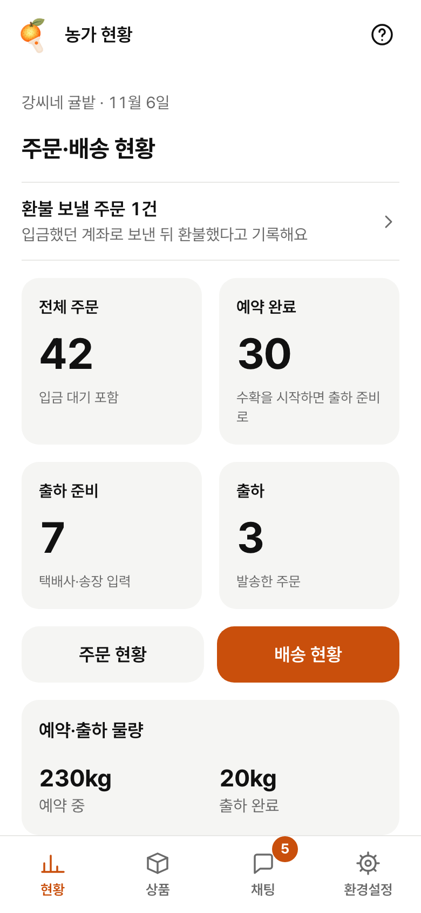
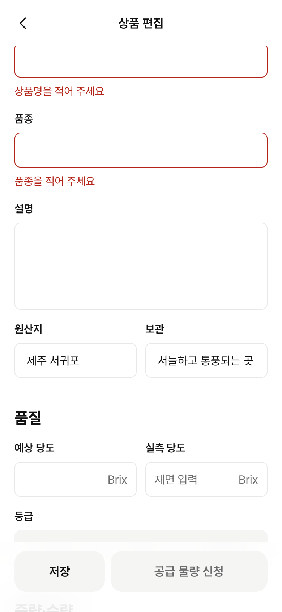
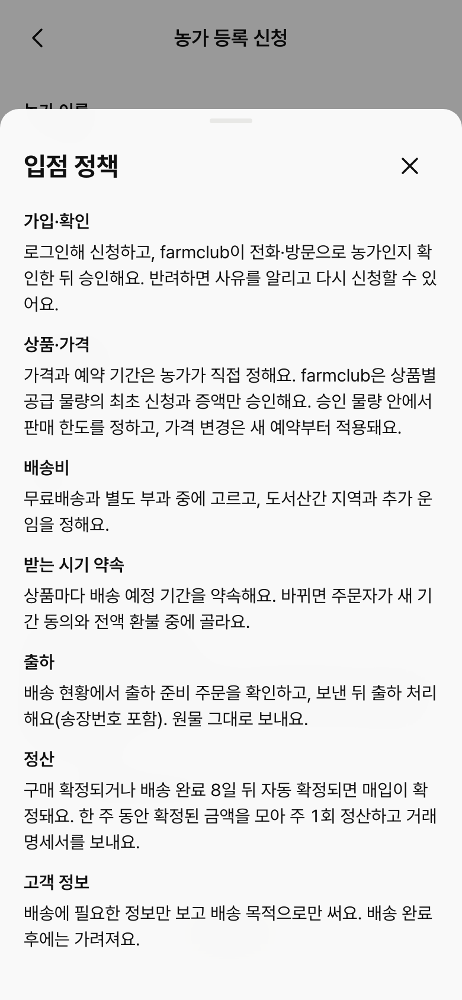

2026년 10월 22일부터 통신판매중개자는 판매자(농가)에게 원산지 표시제도를 알려야 한다. 안 알리면 1회 100만 원부터 과태료가 붙는다. 지금 생산자 앱에는 이 안내가 어디에도 없다. 알릴 내용(무엇을·어떻게 표시하는지, 하면 안 되는 것, 어기면 받는 제재)은 시행령이, 알리는 방법(초기 화면·공지 상시 게시 + 확인 안내 / 별도 안내 화면 / 문자·메일 개별 안내 중 하나)은 시행규칙이 정한다. 아래는 안내를 둘 자리 세 가지다. 세 안 모두 같은 안내 본문(화면 0)을 쓴다. 왼쪽은 지금 main 생산자 앱(Mock)을 390px로 찍은 화면, 오른쪽은 제안이다. 농가 이름·숫자는 예시다.
통신판매중개를 업으로 하는 자는 … 통신판매중개를 의뢰받은 때에는 통신판매중개를 의뢰한 자가 제1항 각 호 또는 제2항 각 호의 어느 하나에 해당하는 행위를 하지 아니하도록 그 자에게 대통령령으로 정하는 농수산물 원산지 표시제도에 관한 사항을 고지하여야 한다. <신설 2026. 4. 21.>
농수산물의 원산지 표시 등에 관한 법률 [법률 제21563호, 시행 2026. 10. 22.] 제6조 ⑥. ⑦항은 "고지의 방법"을 농식품부·해수부 공동 부령에 맡긴다. 과태료는 제18조 ① 제3호의3(1천만 원 이하).
1. 법 제5조에 따른 원산지 표시 대상 농수산물이나 그 가공품의 범위 및 표시방법에 관한 사항
2. 법 제6조제1항 및 제2항에 따른 거짓 표시 등의 금지사항 및 위반 시 제재에 관한 사항
3. 그 밖에 … 농림축산식품부장관과 해양수산부장관이 공동으로 정하여 고시하는 사항
시행령 [대통령령 제36773호, 시행 2026. 10. 22.] 제5조의2. 3호 고시는 찾지 못했다(아직 없거나 못 찾음). 과태료 부과기준 별표 2 제2호 바목: 1차 100만 원 · 2차 200만 원 · 3차 이상 400만 원.
1. … 사이버몰 내 정보처리시스템의 초기 화면 또는 공지사항 게시판에 상시 게시하고, 해당 게시물을 확인하도록 안내하는 방법
2. 통신판매중개 의뢰자가 인지할 수 있도록 사이버몰 내 별도의 안내화면을 제공하는 방법
3. 서면 또는 전자문서(전자우편, 문자메시지 등을 포함한다)를 통해 개별적으로 안내하는 방법
시행규칙 [농림축산식품부령 제797호·해양수산부령 제833호, 시행 2026. 10. 22.] 제4조의2. 이슈 본문은 1·2호만 적었는데 3호(개별 안내)도 있다.
시행령 제5조의2 1·2호를 그대로 단락으로 나눈다. 「무엇을 어떻게 표시해요」「이렇게 하면 안 돼요」「어기면 이렇게 돼요」. 감귤 농가 예(제주산·서귀포시)를 바로 붙인다. 안이 달라도 본문 화면은 같다.
본문은 농가 말투로 쓰고, 조문 번호와 "법 조문을 쉽게 풀어 쓴 안내라 정확한 내용은 법령을 확인해 달라"는 한 줄은 맨 아래 작은 글씨로 둔다. 법률 자문처럼 단정하지 않는다.
규칙 1호의 '상시 게시 + 확인 안내'를 그대로 화면으로. 읽기 전에는 현황 할 일 목록 맨 위에 강조점이 붙은 줄, 읽은 뒤에는 현황 맨 아래 조용한 줄로 남는다. 새 부품 없이 기존 ListRow.
상품 편집 '원산지' 칸 아래 한 줄 도움말 「예: 제주산, 서귀포시 · 표시 방법 보기」. 지금 자리표시자 '제주 서귀포'는 시·도명도 시·군·구명도 아닌 줄임이라 '서귀포시'로 바꾼다.
/origin-notice (세 안 공통)
스크롤 화면 하나. 위 '확인했어요' 버튼은 처음 열었을 때만 하단에 둔다(읽은 시각 기록). 다시 열면 버튼 없이 본문만.
farmclub은 통신판매중개자라서, 농가가 원산지를 바르게 표시하도록 법에서 정한 내용을 알려 드려요.
이 안내는 「농수산물의 원산지 표시 등에 관한 법률」 제5조·제6조·제14조·제18조, 같은 법 시행령 제5조의2·별표 1, 시행규칙 별표 3을 쉽게 풀어 쓴 것이에요. 정확한 내용은 국가법령정보센터(law.go.kr)에서 확인해 주세요. 2026년 10월 22일 시행 법령 기준.
제목은 해야 할 일(읽기)로, 법 이름은 맨 아래로. 시행령 1호(범위·표시방법) → 1단락, 2호(금지·제재) → 2·3단락.
제재 문장은 모두 '~받을 수 있어요'로. 처분은 행정청 재량이라 단정하지 않는다.
'확인했어요'는 동의가 아니라 읽음 기록. 누른 시각을 남겨 고지 증빙으로 쓴다(서버 기록 여부는 질문 1).
본문 문자열은 약관처럼 packages/ui/src/legalContent.ts에 둔다. 법이 바뀌면 한 곳만 고친다.
시행규칙 1호 그대로: 초기 화면에 상시 게시 + 확인하도록 안내. 로그인한 모든 승인 농가가 다음에 앱을 열 때 바로 본다(10/22 전에 가입한 농가 포함).

시행규칙 2호(별도 안내화면). 법이 말하는 '중개를 의뢰받은 때'와 시점이 가장 잘 맞는다. 원산지를 적는 바로 그 자리에서 본다.

공지사항 게시판 성격(1호의 '공지사항 게시판 상시 게시')을 환경설정에 두고, 처음 가입하는 농가는 입점 정책 동의 때 읽는다.

| 안 | 시행규칙 방법 | 기존 승인 농가 | 새 농가 | 농가 부담 | 구현량(예상) |
|---|---|---|---|---|---|
| A 현황 할 일 → 상시 줄 추천 | 1호(초기 화면 상시 게시 + 확인 안내) 그대로 | 다음에 앱을 열면 바로 봄 | 승인 뒤 첫 현황에서 봄 | 한 번 읽고 '확인했어요' 1탭 | 안내 화면 1, 현황 줄 2, 읽음 기록. 약 2~3h (서버 기록 넣으면 +1.5h) |
| B 첫 상품 시트 + 칸 도움말 | 2호(별도 안내화면) | 새 상품을 만들 때까지 못 봄 → 3호 일괄 문자 필요 | 첫 상품 때 봄 (시점 가장 정확) | 상품 만들 때 시트 1번 | 시트 1, 도움말 1, 안내 화면 1. 약 2h |
| C 입점 정책 + 환경설정 | 1호 '공지 게시판'에 가깝지만 '확인 안내'가 약함 | 못 봄 → 3호 일괄 문자 필요 | 가입 신청 때 봄 | 거의 없음(정책 시트 한 항목) | 정책 항목 1, 설정 줄 1, 안내 화면 1. 약 1.5h |
A가 유일하게 시행규칙 1호를 문장 그대로 채우고, 10월 22일 전에 들어온 농가까지 따로 문자를 보내지 않고 덮는다. 원산지 칸 도움말(B 일부)은 입력하는 순간에 표시 방법을 보여 주는 값싼 보강이고, 입점 정책 한 줄(C 일부)은 승인 전 농가의 빈틈을 메운다. B의 첫 상품 시트와 C의 환경설정 줄은 A와 겹쳐 넣지 않는다(현황 상시 줄이 같은 역할).
legalContent.ts)약관이 바뀌면 재동의를 받는 구조(DEV-113)라 버전·시행일과 제14조(처리방침 아님) 변경 기록 한 줄이 함께 필요하다. 문구만 넣고 재동의를 받을지는 질문 3.
origin_notice_read_at·버전 한 칸, 위험 등급은 서버 모델이 바뀌면 다시 본다.) 기기에만 두면 앱 코드만으로 끝난다.packages/ui/src/ProductPage.tsx)은 원산지를 접힌 '상품정보' 표 안에만 보여 준다. 시행규칙 별표 3 2호가목1)은 상품명·가격 옆·위·아래에 붙여서(또는 위치 표시를 붙여서), 상품명·가격 글자와 같거나 큰 크기로 표시하라고 한다. 법상 표시 의무자는 농가지만, 표시 자리를 만드는 건 farmclub 화면이라 따로 이슈로 보는 게 좋겠다.